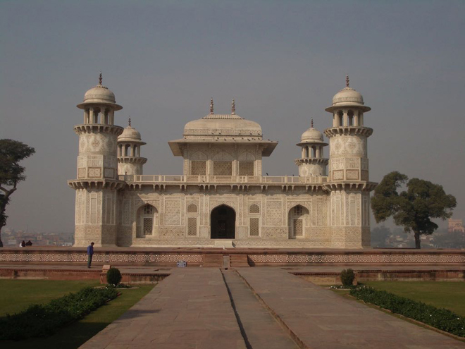
.
Nicknamed the Baby Taj, the Itimad-ud-Daulah is the exquisite tomb of Mizra Ghiyas Beg and was the first Mughal structure totally built from marble and the first to make extensive use of pietra dura.
Mizra Ghiyas Beg was a Persian nobleman who was Jehangir's wazir (chief minister). His daughter, Nur Jahan, who married Jehangir, built the tomb between 1622 and 1628 in a style similar to the tomb she built for Jehangir near Lahore in Pakistan.
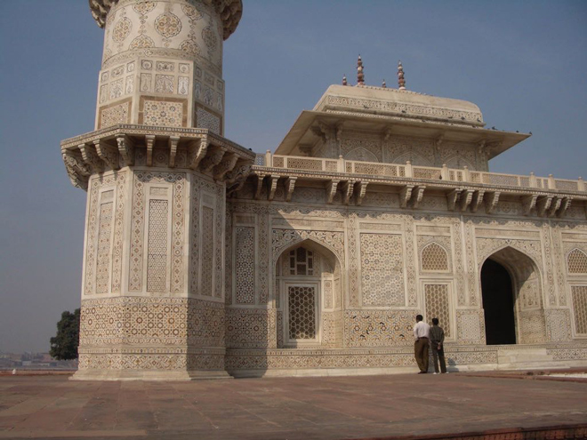
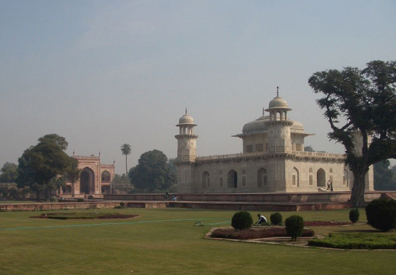
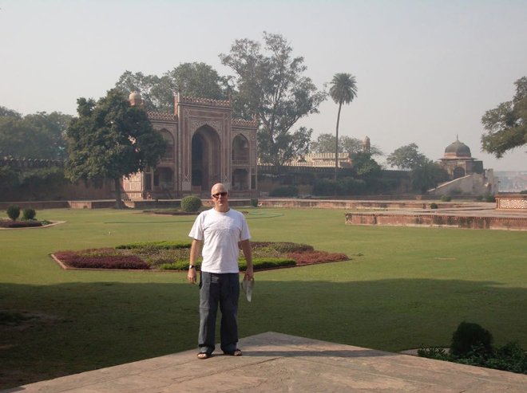
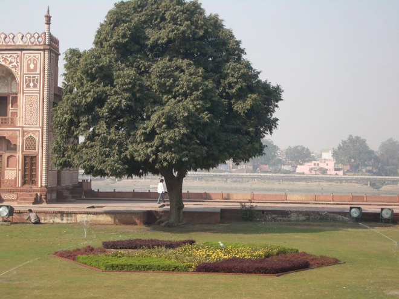
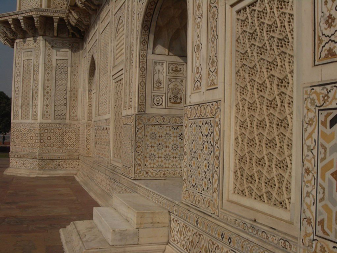
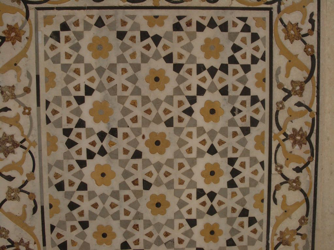
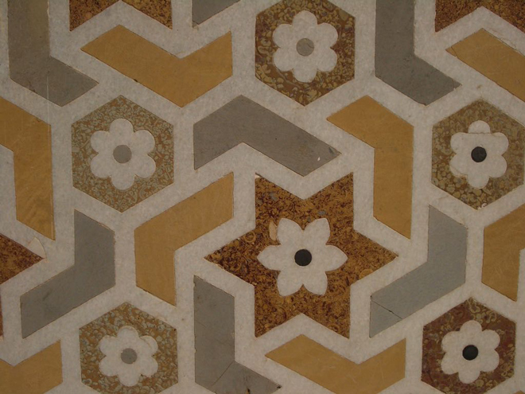
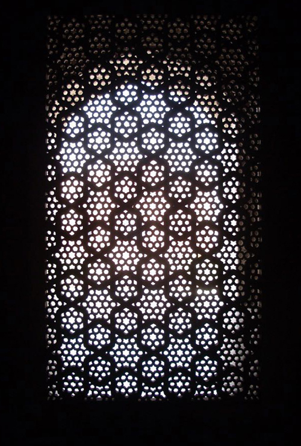
Then we visited the Chini-ka-Rauza, a Persian-style riverside tomb of Afzal Khan, a poet and high official in the court of Shah Jahan. It was built between 1628 and 1639. This relatively unknown mausoleum is hidden away down a shady avenue of trees. Bright blue tiles still cover part of the exterior and the interior is painted in floral designs.
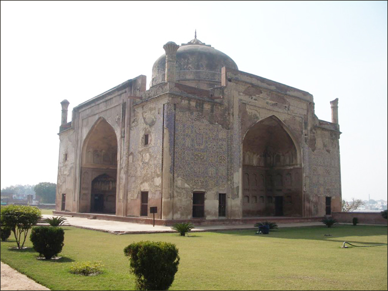
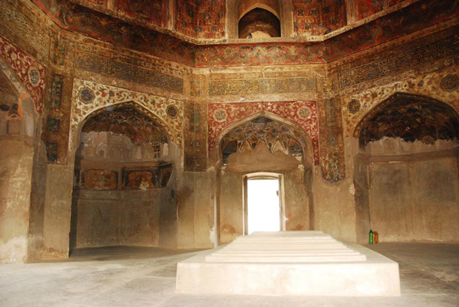
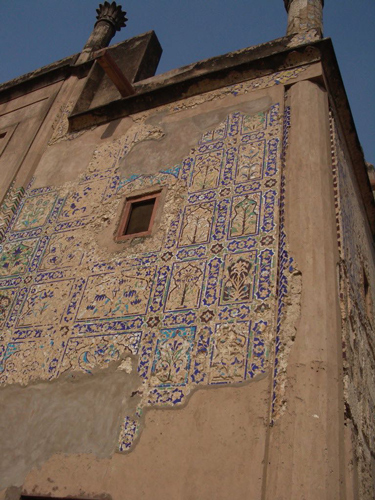
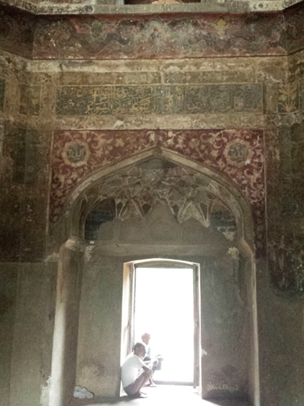
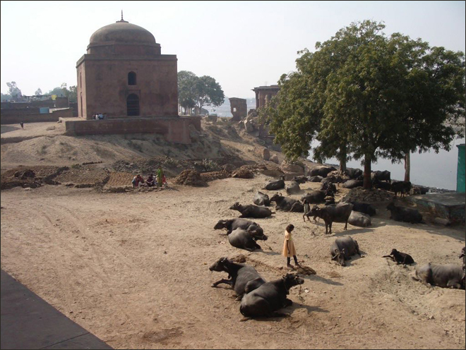
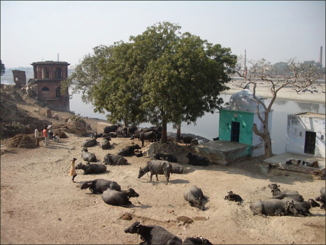
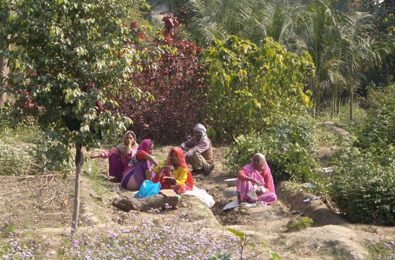
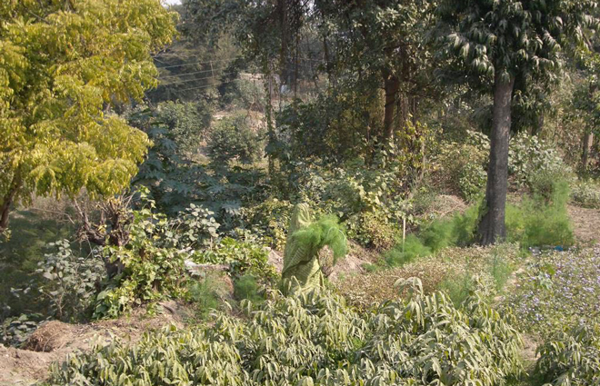
As we were on the other side of the Yamuna River, it gave us the opportunity to view the Taj Mahal from behind which was unusual, seeing it from fields planted by farmers, as it has looked for nigh on 500 years.
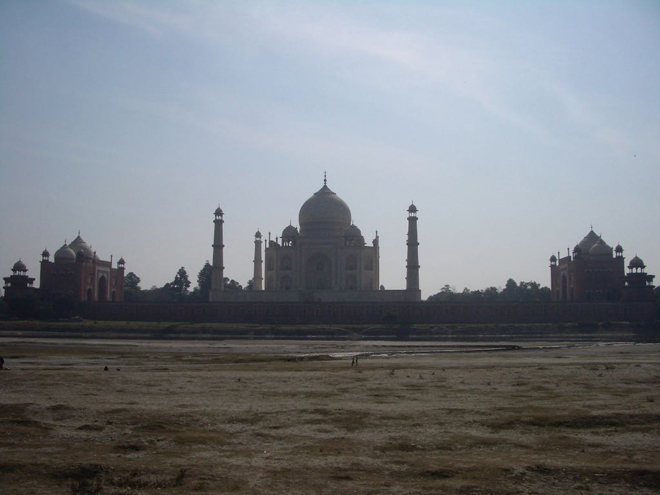
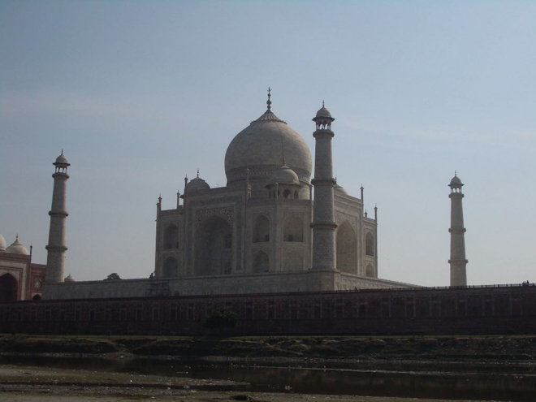
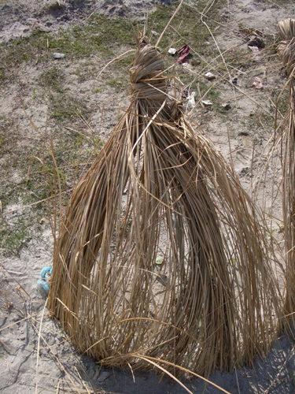
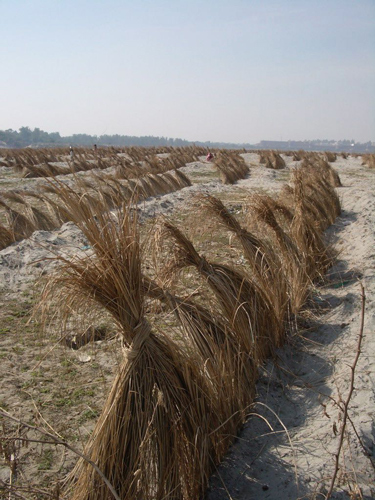
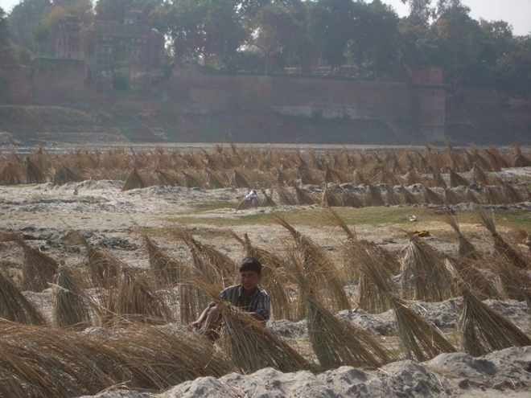